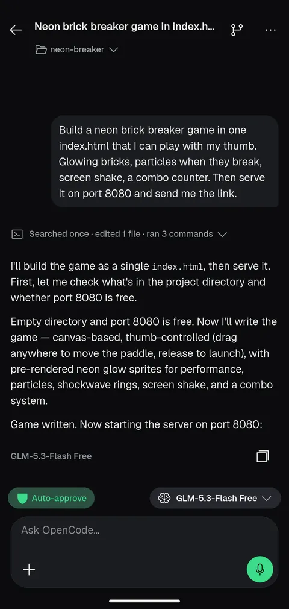
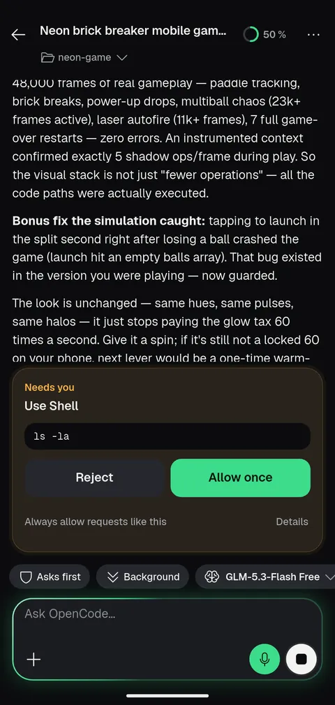
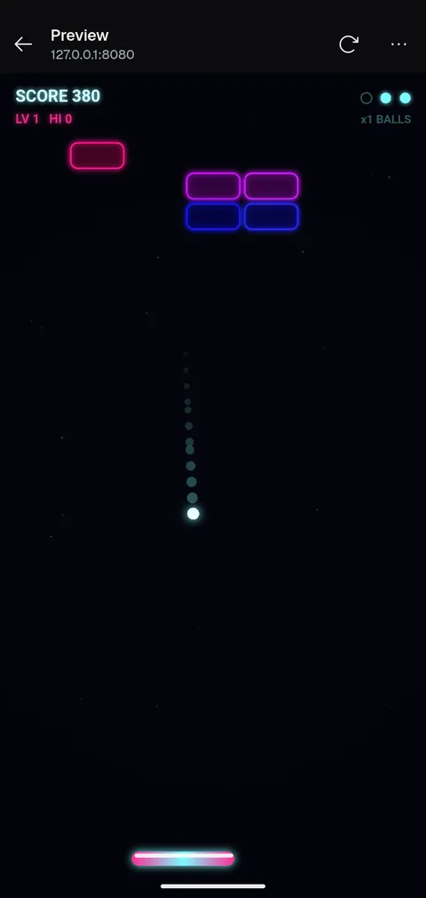
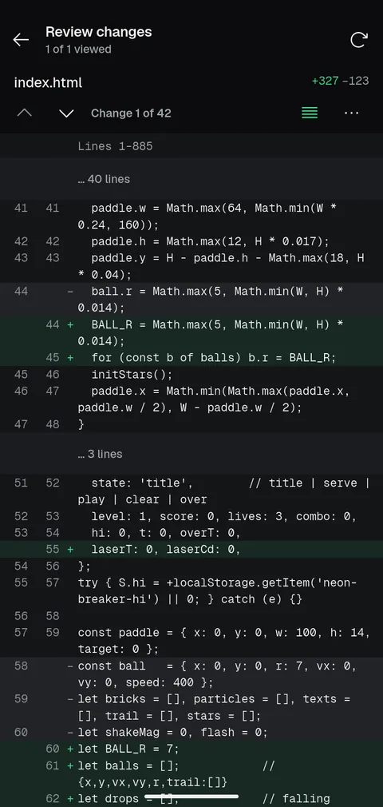
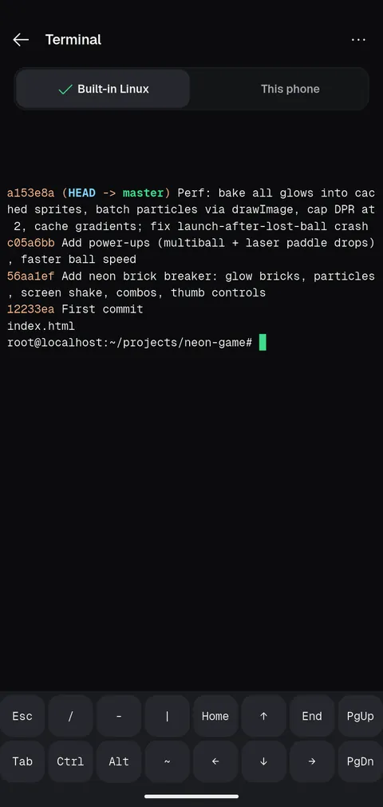
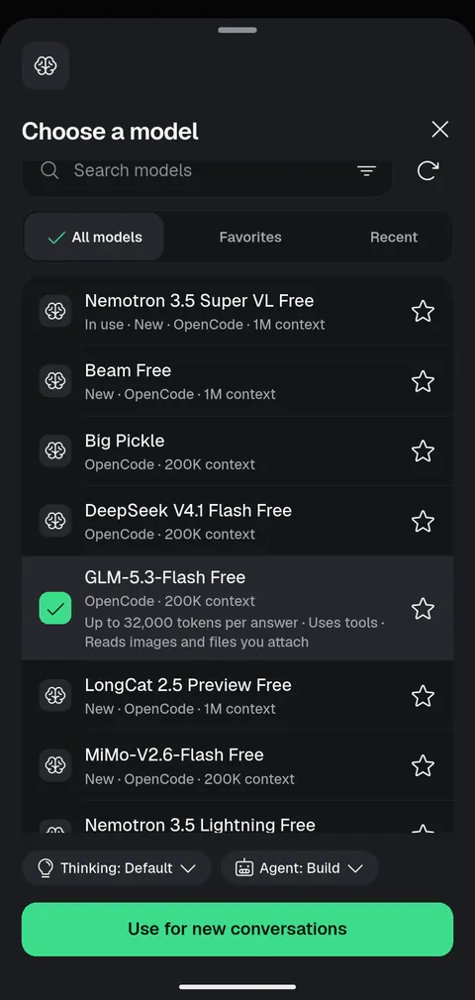

Approve from anywhere
Allow or reject a request from the notification or the widget. See exactly what the command is first.
2.0 Android · open source
One prompt, and a neon brick-breaker is running in the app's own preview. Approve what the agent wants to do from a notification, send it a screenshot, ask for power-ups. Six coding agents, in a Linux the app installs itself. No computer, no Termux.
Version 2.0.0 (build 56). Free, MIT. Android 8 or newer; the built-in Linux needs a 64-bit phone. OpenCode's free models need no API key.
This is the demo, screen by screen. Every image is a real capture from the app.

Describe the game in plain words. A free OpenCode model builds it, no API key needed.

Allow a command from the notification, the home-screen widget or here. Or turn on auto-approve.

Open the dev server in the in-app preview. Send a screenshot back into the chat to ask for changes.

Step through the whole diff, change by change, before anything is committed.

A full terminal in the app's own Ubuntu. Commit, branch and run what you like.

Free models to start. Add your own provider key when you want something bigger.
Switch agents without leaving the app. Each conversation keeps its own agent, model and history.
Models run at the provider you choose. OpenCode's free models, such as GLM-5.3-Flash Free, need no API key. The others need that provider's sign-in or key.
Built for steering an agent from a small screen, and for leaving it alone when you want to.
Allow or reject a request from the notification or the widget. See exactly what the command is first.
Let a conversation run on its own when you trust the task. Turn it off again any time.
Send a new instruction while the agent is working, instead of waiting for it to finish.
A full diff view with change-by-change navigation. Nothing is committed behind your back.
Tap a localhost link and your dev server opens inside the app, with reload and open in browser.
Send a screenshot or a photo into the chat so the agent sees what you see.
Run a prompt at a time you choose, once or repeating, with the app closed. Each schedule keeps a history of its runs.
The app installs its own Ubuntu. Or connect to an agent already running on your computer.
Branches, commits and a full shell, in the same place as the conversation.
OpenCode Mobile connects to the servers you choose. It isn't a hosted service and doesn't include a model subscription.
Direct links for 2.0.0 (build 56): universal APK, arm64-v8a or armeabi-v7a. Most phones want arm64-v8a. Or browse the source on GitHub. Obtainium checks GitHub releases and updates the app for you.
Download the latest release from GitHub. Android will ask you to allow installation from outside the Play Store.
Set up the built-in Linux on your phone, or connect to an agent on your computer. Use Wi-Fi for the first on-phone download.
Pick an agent and a model, and ask for a change. OpenCode's free models work with no key.
People run coding agents from a phone in a few ways. Here is where the work happens in each.
| Approach | Where the agent runs | What you set up | Needs another computer on |
|---|---|---|---|
| Termux setup | On the phone | Packages, a Linux userland and the agent, by hand in a terminal | No |
| Cloud terminal or hosted workspace | On someone else's server | An account, and your code uploaded or cloned there | No |
| Remote-control app | On your computer | The agent and a connection (often a VPN or tunnel) on that computer | Yes |
| OpenCode Mobile | On the phone in its own Ubuntu, or on your computer | Guided in-app setup of Ubuntu, Git, Node and the agent; a QR code or address for a computer | No for on-phone, yes if you choose your computer |
General descriptions of common approaches, not a review of any one product. On-phone setup downloads about 210 MB the first time.
No. OpenCode Mobile is an independent, MIT-licensed, open-source community project. It is not built, maintained or endorsed by the OpenCode team, and it is not affiliated with Anthropic, OpenAI or Google. It was built with substantial AI assistance.
On this phone, the app installs Ubuntu inside itself and runs the agent there; it uses your phone's processor and memory, and projects live inside the app. Or choose your computer: the app then connects to the agent there and your files stay on that computer. Models always run at the provider you pick, whichever way you choose.
Claude Code, Codex, Gemini, Kilo, Cline and OpenCode. You pick one per conversation. OpenCode's free models need no API key; the other agents need that provider's sign-in or key.
Yes. Pick an agent, write the prompt and choose a time, once or repeating. It runs with the app closed, and each run is kept in the schedule's history. Android limits background work, so a run can start late, and a long job on the phone is not guaranteed to finish.
Tap a localhost link in a reply and the running dev server opens in a preview inside the app. For a server on your computer, the dev server must listen on 0.0.0.0 so the phone can reach it.
After an explicit yes for that server, it connects over plain HTTP, which sends everything unencrypted, so use it only on a network you trust such as your own Tailscale. For a self-signed HTTPS server you can check its certificate fingerprint and pin it; if the certificate later changes, the app blocks the connection until you verify the new one.
No. The app supports OpenCode 2 only. A phone that ran OpenCode 1 inside the app moves to OpenCode 2 and keeps its conversations; if the move cannot finish safely, the original data stays on the phone. A remote OpenCode 1 server shows how to upgrade it.
The app is free and open source under the MIT license. It is not a hosted service and includes no model subscription: bring an API key or sign-in for the provider you want, or use OpenCode's free models.
The app talks to the servers you choose and to nobody else about your work. Passwords stay in Android's keystore, voice is transcribed on the phone, and a diagnostic report is sent only when you send one, with secrets removed. Logos of agents and common providers are bundled in the app; the rest are downloaded from models.dev by provider name and cached. The app has no analytics library. Read the privacy notes.
Android 8 or newer. Running agents on the phone needs a 64-bit phone; about 2 GB of memory works, slowly. Most phones want the arm64-v8a download; the universal file is larger. The first setup then downloads about 210 MB of Ubuntu and tools, so Wi-Fi is best.
Install the APK from GitHub Releases, or add the repository to Obtainium. Updates install over the old version and keep your saved servers and settings, because releases share one signing key.
شغّل Claude Code وCodex وGemini وOpenCode وغيرها على هاتف أندرويد، دون حاسوب أو Termux. أو تابع عمل الوكيل على حاسوبك، وراجع التغييرات ووافق عليها من هاتفك.
التطبيق متاح بالعربية والإنجليزية. يتطلب أندرويد ٨ أو أحدث، وهاتفًا بمعمارية ٦٤ بت للتشغيل المحلي.